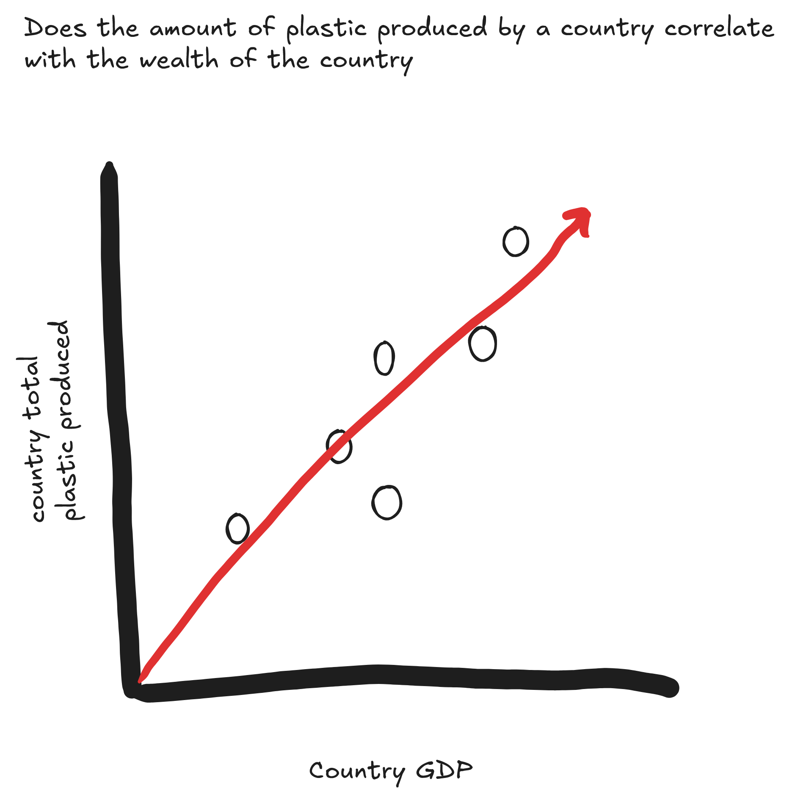
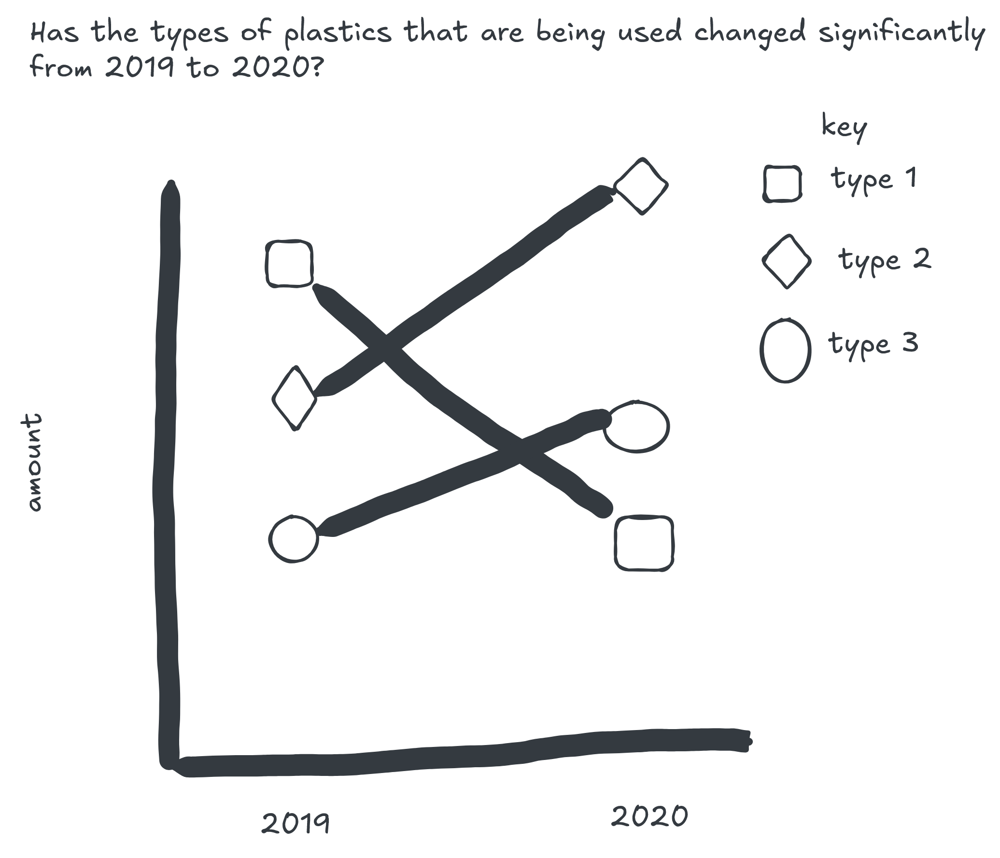
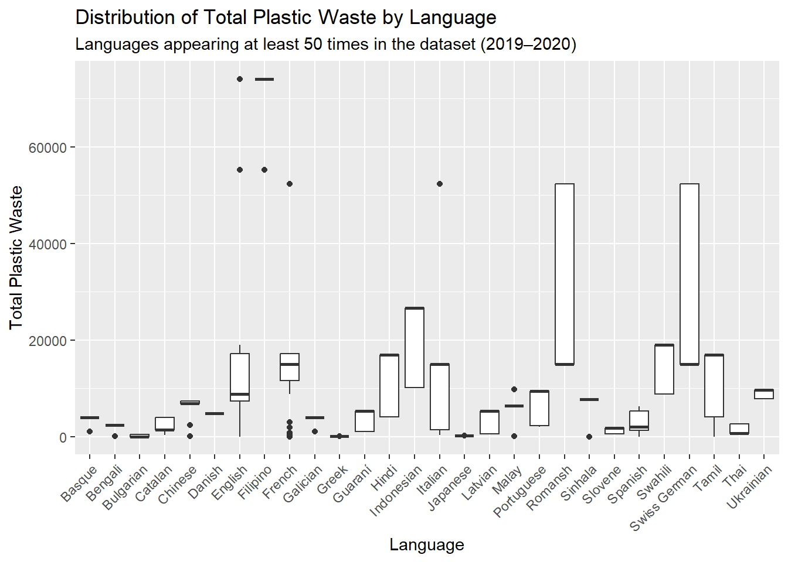

── Attaching core tidyverse packages ──────────────────────── tidyverse 2.0.0 ──
✔ dplyr 1.2.0 ✔ readr 2.2.0
✔ forcats 1.0.1 ✔ stringr 1.6.0
✔ ggplot2 4.0.2 ✔ tibble 3.3.1
✔ lubridate 1.9.5 ✔ tidyr 1.3.2
✔ purrr 1.2.1
── Conflicts ────────────────────────────────────────── tidyverse_conflicts() ──
✖ dplyr::filter() masks stats::filter()
✖ dplyr::lag() masks stats::lag()
ℹ Use the conflicted package (<http://conflicted.r-lib.org/>) to force all conflicts to become errors
library(glue)library(here)
here() starts at /Users/nosyergb/STAT-431-Project-1
library(jsonlite)
Attaching package: 'jsonlite'
The following object is masked from 'package:purrr':
flatten
library(purrr)
Check-In 1
tuesdata <- tidytuesdayR::tt_load('2021-01-26')
---- Compiling #TidyTuesday Information for 2021-01-26 ----
--- There is 1 file available ---
── Downloading files ───────────────────────────────────────────────────────────
1 of 1: "plastics.csv"
plastics <- tuesdata$plastics
Background
The data comes from Break Free from Plastic (BFFP). The data contains variables relating to types of plastic, where the plastic comes from, and country.
Cleaning
the columns in the data have been assigned certain classes like (double, character). they also cleaned the names of the columns using the janitor package. They also took two data sets from 2020 and 2019 and bound the rows together.
Research Questions
Has the types of plastics that are being used changed significantly from 2019 to 2020
How does the gap in total plastic consumption change between countries between 2019 and 2020
Supplemental Data Questions
Does the amount of plastic produced by a country correlate with the wealth of the country
Does the size of the company affect the amount of plastic produced
visuals


Check-In 2
# How does the difference in total plastic consumption change between countries between 2019 and 2020country_plas_diff <-function(country1, country2) { plastics |>filter(country %in%c(country1, country2)) |>group_by(year, country) |>summarize(tot_plastic =sum(grand_total), .groups ='drop') |>arrange(desc(year)) |>group_by(year) |>summarize(plastic_diff = tot_plastic[country == country1] - tot_plastic[country == country2]) |>mutate(comparison =paste0(country1, ' - ', country2, ' (', year,')')) |>select(comparison, plastic_diff)}country_plas_diff('Ukraine', 'China')
# A tibble: 2 × 2
comparison plastic_diff
<chr> <dbl>
1 Ukraine - China (2019) 2758
2 Ukraine - China (2020) 5558
from 2019 to 2020 the gap in total plastic produced between Ukraine and china has grown more than 100%
# Has the types of plastics that are being used changed significantly from 2019 to 2020plastic_types <-c("hdpe", "ldpe", "pet", "pp", "ps", "pvc", "o", "grand_total")changes <-map_dbl(plastic_types,function(type) { plastics |>group_by(year) |>summarize(total =sum(across(all_of(type)), na.rm =TRUE),.groups ="drop") |>arrange(year) |>pull(total) |>diff() } )tibble(plastic_type = plastic_types,`2020-2019`= changes)
most types of plastics are being used less in 2020 when compared to 2019, the only exceptions being Polypropylene and Polyvinyl chloride
# On average, how much plastic do countries produce per unit of GDP?# load gdp data, from worldbank.org# https://data.worldbank.org/indicator/NY.GDP.MKTP.CD?most_recent_year_desc=false# data was pivoted to create a year variable# cleaning GDP data to match plastics dataGDP_2019_2020 <-read.csv(here("GDP_data.csv"), skip =4) |>select(Country.Name, X2019, X2020) |>rename(`2019`= X2019, `2020`= X2020) |>pivot_longer(cols =c(`2019`, `2020`),names_to ="year",values_to ="gdp") |>mutate(year =as.numeric(year)) |>rename(country = Country.Name) |>mutate(country =recode( country,"Cote d'Ivoire"="Cote D_ivoire","Ecuador"="ECUADOR","Hong Kong SAR, China"="Hong Kong","Korea, Rep."="Korea","Nigeria"="NIGERIA","Turkiye"="Turkey","United Kingdom"="United Kingdom of Great Britain & Northern Ireland","United States"="United States of America","Viet Nam"="Vietnam" ) )# Summarizes total plastic use by country and year, excluding non-country entries.plastic_summary <- plastics |>filter(country !="EMPTY") |>group_by(country, year) |>summarize(total_plastic =sum(grand_total, na.rm =TRUE), .groups ="drop")# combine the datacombined_data <- plastic_summary |>inner_join(GDP_2019_2020, by =c("country", "year"))# summaryplastic_wealth_summary <-function(year_input) { combined_data |>filter(year == year_input) |>mutate(plastic_per_gdp = total_plastic / gdp) |>summarize(year = year_input,avg_plastic_per_gdp =mean(plastic_per_gdp, na.rm =TRUE))}plastic_wealth_summary(2020)
# A tibble: 1 × 2
year avg_plastic_per_gdp
<dbl> <dbl>
1 2020 0.0000000619
in 2020, the average amount of plastic produced per GDP for a country was 6.189 * 10^-8
# On average, how much plastic do countries produce per unit of GDP, by country wealth size and year# my original other question was too difficult to fidn data for, so I answered this questionyears <-c(2019, 2020)results <-tibble()group_gdp_plastics_data <- combined_data |>mutate(wealth_group =factor(ntile(gdp, 5), labels =c("Low", "Lower-Middle", "Middle", "Upper-Middle", "High")),plastic_per_gdp = total_plastic / gdp)for (y in years) { temp <- group_gdp_plastics_data |>filter(year == y) |>mutate(plastic_per_gdp = total_plastic / gdp ) |>group_by(wealth_group) |>summarize(avg_plastic_per_gdp =mean(plastic_per_gdp, na.rm =TRUE),.groups ="drop" ) |>mutate(year = y) results <-bind_rows(results, temp)}results
the lowest average plastic per GDP belonged to the wealthiest countries in 2020, while the highest average plastic per GDP belonged to the least wealthy countries in 2020.
Check-In 3
# note: GDP data comes from Check In 2# matching countries to csv in order to match codesplastics <- plastics |>filter(country !="EMPTY") |>mutate(country =recode( country,"Taiwan_ Republic of China (ROC)"="Taiwan, Province of China","Cote D_ivoire"="Côte d'Ivoire","ECUADOR"="Ecuador","NIGERIA"="Nigeria","Netherlands"="Netherlands, Kingdom of the","Tanzania"="Tanzania, United Republic of","Turkey"="Türkiye","United Kingdom"="United Kingdom of Great Britain and Northern Ireland","Vietnam"="Viet Nam","Korea"="Korea, Republic of","United Kingdom of Great Britain & Northern Ireland"="United Kingdom of Great Britain and Northern Ireland" ))# reading in csv, found here https://github.com/lukes/ISO-3166-Countries-with-Regional-Codes/blob/master/all/all.csvCountry_Codes <-read.csv(here('Country-Codes.csv'),colClasses =c("character", "character")) |>rename(country = name) |>select(country, country.code)# joinplastics_w_code <- plastics |>left_join(Country_Codes, by ="country")# take unique country codescodes <- plastics_w_code |>distinct(country.code) |>pull(country.code)# api call functioncollect_api_data <-function(code) { base_url <-'https://restcountries.com/v3.1/alpha/' ctry_url <-glue('{base_url}','{code}') ctry_data <-fromJSON(ctry_url)if(length(ctry_data) ==0){return(NA) }else{ ctry_data |>pull(languages) }} # iterate through unique codesLanguages <-map(codes, collect_api_data)# given a list of data frames formatted weirdly, so pivotingLanguage_pivot <-function(list_df){ list_df |>pivot_longer(cols =everything(),names_to ='Code',values_to ='Language') |>select(Language)}# iterate through the list of data framesLanguages <-map(Languages, Language_pivot)# combine the languages into one valueCombine_lang <-function(list_df){ list_df |>summarize(all_languages =paste(Language, collapse =', '))}# iterate through list of data framesLanguages <-map(Languages, Combine_lang)# pull languagescollect_lang <-function(list_df){ list_df |>pull(all_languages)}# create languages data frame with codes and languageslanguages_df <-tibble(country.code = codes,all_languages =map(Languages, collect_lang))# checking how many columns I need for separating languageslanguages_df |>mutate(n_lang =str_count(all_languages, ",") +1) |>pull(n_lang) |>max()
[1] 11
# join all data (including GDP data from Check-in 2), and separating languages (this is our "meta" dataset)Updated_Plastics <- plastics_w_code |>inner_join(languages_df, by ='country.code') |>inner_join(combined_data, by =c('country', 'year')) |>separate_wider_delim(cols = all_languages,delim =", ",names =paste0("lang", 1:11),too_few ="align_start")
# Plastic count per countries by language spokenUpdated_Plastics |>pivot_longer(cols =starts_with("lang"),names_to ="lang_num",values_to ="language" ) |>filter(!is.na(language)) |>add_count(language, name ="lang_count") |>filter(lang_count >=50) |>ggplot(aes(x = language, y = total_plastic)) +geom_boxplot() +theme(axis.text.x =element_text(angle =45, hjust =1)) +labs(title ="Distribution of Total Plastic Waste by Language",subtitle ="Languages appearing at least 50 times in the dataset (2019–2020)",x ="Language",y ="Total Plastic Waste",)

According to the graph, countries that include English or Filipino among their reported languages tend to show higher maximum levels of plastic waste from 2019-2020. Other common languages include French and Italian, while Romansh and Swiss German display much greater variability in plastic waste, as indicated by the wide spread of their boxplots.
This graph shows that the composition of plastic types is relatively similar across GDP ranges. Other plastics (labeled ‘o’) make up the largest proportion in all groups except in the “Low” and “Lower-Middle” GDP range, who tend to have a higher share of PET usage. The “Middle” and “Higher” GDP ranges have a more balanced distribution across the different plastic types than the other groups.